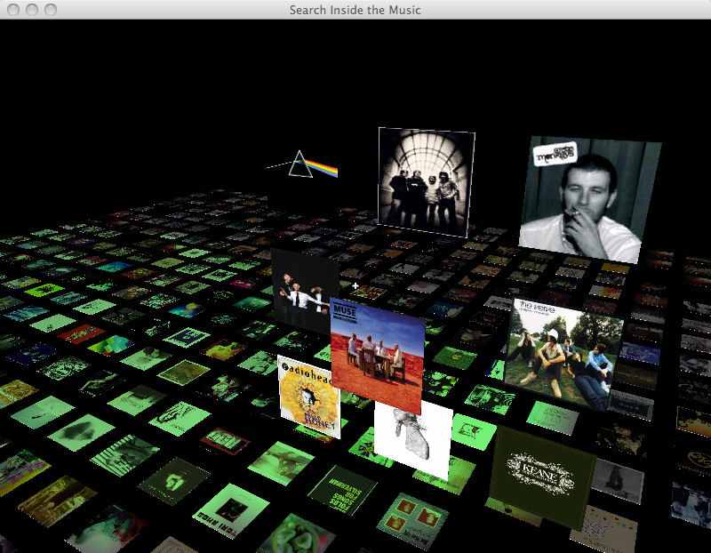
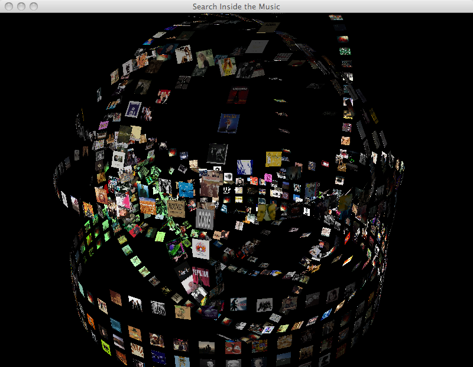

The Music Explaura Video
Over the holiday break, I like to do a bit of recreational
programming ... this year I shall be working on the Music Explaura. This
is a rich internet application that will allow you to explore your own
music collection, get recommendations for new music and generally just
have fun while discovering new music. Of course it will hook up to Project Aura to
get all the recommendations. I have enough of the pieces put together
that I was able to do a little demo showing some of the interface. I
made a video and posted it to Youtube:
(and by the way, his is my first Youtube video)
And here are some screenshots:



Paul, some of those animation transitions (especially toward the end) are really hypnotic. Great job!
Is this J2D, or JMonkeyEngine?
Posted by Sten Anderson on December 24, 2008 at 02:28 PM EST #
@sten thanks for the compliments. This is all done with JMonkeyEngine.
Posted by Paul Lamere on December 24, 2008 at 05:00 PM EST #
This looks incredible. Awesome job!
Posted by Dan Kantor on January 01, 2009 at 09:13 AM EST #